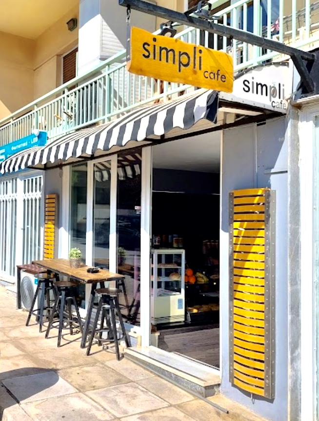
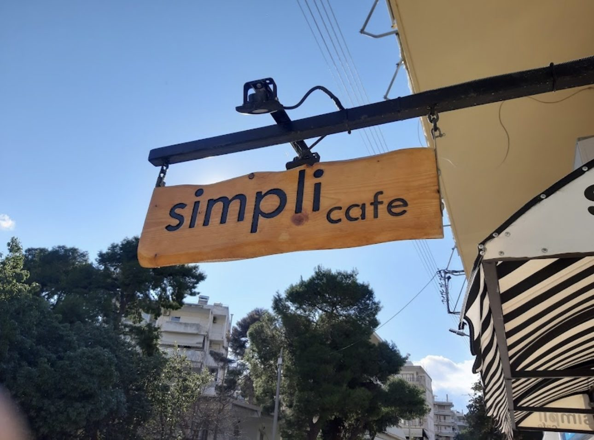

Καφές που θα πίναμε κι εμείς
Ένα χαρμάνι espresso, καβουρδισμένο για εμάς στην Αττική και φρέσκο κάθε εβδομάδα. Το ρυθμίζουμε κάθε πρωί και το ξαναδοκιμάζουμε το μεσημέρι.
Το μαγαζί
Χωρίς κεντρικά γραφεία και εγχειρίδια franchise. Μια γωνία, μια μηχανή που ξέρουμε απ' έξω κι ανακατωτά, και τα ίδια πρόσωπα κάθε πρωί.

Πήραμε το μαγαζί όταν ήταν ακόμα ένα κλειστό περίπτερο, κρατήσαμε το κίτρινο ρολό επειδή μας άρεσε, και ανοίξαμε με μια μηχανή espresso, ένα ψυγείο και οκτώ σκαμπό. Αυτό ήταν όλο το σχέδιο.
Το όνομα ήρθε πριν από όλα τα υπόλοιπα. Θέλαμε ένα μέρος που κάνει λίγα πράγματα σωστά αντί για τα πάντα μέτρια — καλό καφέ, κάτι φρέσκο να τον συνοδεύει, και μια θέση για δέκα λεπτά πριν ξεκινήσει η μέρα. Απλό, αλλά όχι πρόχειρο. Υπάρχει διαφορά, και φαίνεται.
Χρόνια μετά, ο κατάλογος έχει μεγαλώσει κατά έξι γραμμές. Τα σκαμπό είναι τα ίδια.
Τι μας νοιάζει
Ένα χαρμάνι espresso, καβουρδισμένο για εμάς στην Αττική και φρέσκο κάθε εβδομάδα. Το ρυθμίζουμε κάθε πρωί και το ξαναδοκιμάζουμε το μεσημέρι.
Οι πίτες, τα γλυκά και οι γεμίσεις γίνονται στην κουζίνα μας. Το ψωμί έρχεται από φούρνο τεσσάρων δρόμων πιο κάτω.
Μαθαίνουμε πώς τον πίνεις. Αν είσαι από τους δικούς μας, ο καφές ξεκινά πριν φτάσεις στον πάγκο.

Η ταμπέλα
Η ταμπέλα πάνω από το πεζοδρόμιο κόπηκε από ένα κομμάτι πεύκο και έμεινε με τη φυσική της άκρη, οπότε καμία πλευρά δεν είναι ίδια με την άλλη. Τα γράμματα σκαλίστηκαν στο χέρι.
Υπάρχει ένας ρόζος στο ξύλο που έπεσε ακριβώς εκεί που θα πήγαινε η τελεία του τελευταίου i. Κανείς δεν το σχεδίασε. Αποφασίσαμε ότι αυτό είναι το λογότυπο και δεν φτιάξαμε ποτέ άλλο — την ίδια καφέ τελεία θα τη βρεις σε κάθε γωνιά αυτού του site.